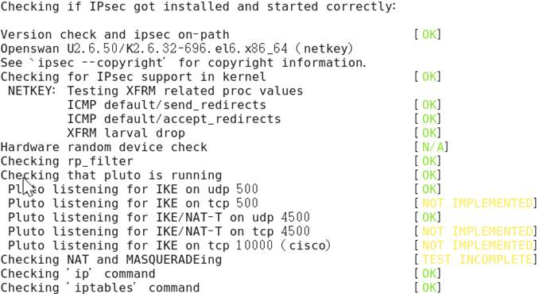
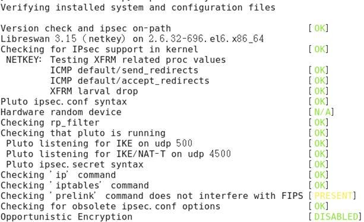

实验1：VPN、IPSec分析
1) 实验内容
基于REDHAT9.0搭建OPENSWAN实验环境，配置IPsec VPN，用VPN技术进行两台计算机之间的通信。其中包括在Linux下安装kernel-source，搭建OPENSWAN场景，运行IPsec协议中，通过ethereal软件进行协议分析，并测试协议的工作情况。
2**)** 实验目的
通过本实验，了解IPSec，VPN的技术原理，体系结构，并分析该网络协议执行的过程和存在的问题。
3）实验过程
虚拟机准备
共2台，均为6.9版本ROOT用户：
Left-CentOS（192.168.249.136）
Right-CentOS（192.168.249.137）
实验内容
设置内核参数sysctl.conf文件，开启路由转发
|
|
修改其中项目：
net.ipv4.ip_forward = 1
net.ipv4.conf.default.rp_filter = 0
禁用icmp重定向，然后执行修改：
sysctl -a | egrep "ipv4.*(accept|send)_redirects" | awk -F "=" '{print $1"=0"}' >>/etc/sysctl.conf
sysctl -p
安装Openswan：
|
|
Openswan支持许多不同的认证方式，包括RSA keys、pre-shared keys或x.509证书方式，以下以PSK为例进行实验
修改 /etc/ipsec.conf文件中的配置（以下设置可直接覆盖原内容使用）
vim /etc/ipsec.conf
Left-CentOS（192.168.249.136）：
version 2.0 # 必须有这句话, 并且不同的版本关键字不同
config setup
interfaces=%defaultroute # 自己的IP
nat_traversal=yes # 支持客户端在一个NAT设备下
conn %default
authby=secret # 指定为PSK
conn l-r # 连接的名称，启动时需要指定
left=192.168.249.136 # Left-CentOS的IP
right=192.168.249.137 # Right-CentOS的IP
type=tunnel
auto=start # start connection when pluto started
Right-CentOS（192.168.249.137）：
version 2.0 # 必须有这句话, 并且不同的版本关键字不同
config setup
interfaces=%defaultroute # 自己的IP
nat_traversal=yes # 支持客户端在一个NAT设备下
conn %default
authby=secret # 指定为PSK
conn l-r # 连接的名称，启动时需要指定
left=192.168.249.136 # Left-CentOS的IP
right=192.168.249.137 # Right-CentOS的IP
type=tunnel
auto=add # add connection when pluto started
编辑PSK的秘钥
|
|
Left-CentOS（192.168.249.136）：
include /etc/ipsec.d/*.secrets
192.168.249.136 192.168.249.137 : PSK "abc"
Right-CentOS（192.168.249.137）：
include /etc/ipsec.d/*.secrets
192.168.249.137 192.168.249.136 : PSK "abc"
执行命令检查ipsec配置情况：
|
|
没有failed（失败）的项目
Left-CentOS（192.168.249.136）：

Right-CentOS（192.168.249.137）：

在Right-CentOS上执行
|
|
显示结果为，说明隧道建立成功
002 "l-r" #1: initiating Main Mode
104 "l-r" #1: STATE_MAIN_I1: initiate
010 "l-r" #1: STATE_MAIN_I1: retransmission; will wait 500ms for response
010 "l-r" #1: STATE_MAIN_I1: retransmission; will wait 1000ms for response
003 "l-r" #1: received Vendor ID payload [Dead Peer Detection]
003 "l-r" #1: received Vendor ID payload [FRAGMENTATION]
003 "l-r" #1: received Vendor ID payload [RFC 3947]
002 "l-r" #1: enabling possible NAT-traversal with method RFC 3947 (NAT-Traversal)
002 "l-r" #1: transition from state STATE_MAIN_I1 to state STATE_MAIN_I2
106 "l-r" #1: STATE_MAIN_I2: sent MI2, expecting MR2
003 "l-r" #1: NAT-Traversal: Result using RFC 3947 (NAT-Traversal) sender port 500: no NAT detected
002 "l-r" #1: transition from state STATE_MAIN_I2 to state STATE_MAIN_I3
108 "l-r" #1: STATE_MAIN_I3: sent MI3, expecting MR3
003 "l-r" #1: received Vendor ID payload [CAN-IKEv2]
002 "l-r" #1: Main mode peer ID is ID_IPV4_ADDR: '192.168.249.136'
002 "l-r" #1: transition from state STATE_MAIN_I3 to state STATE_MAIN_I4
004 "l-r" #1: STATE_MAIN_I4: ISAKMP SA established {auth=PRESHARED_KEY cipher=aes_256 integ=sha group=MODP2048}
002 "l-r" #4: initiating Quick Mode PSK+ENCRYPT+TUNNEL+PFS+UP+IKEV1_ALLOW+IKEV2_ALLOW+SAREF_TRACK+IKE_FRAG_ALLOW {using isakmp#1 msgid:c0fd4e2b proposal=defaults pfsgroup=OAKLEY_GROUP_MODP2048}
117 "l-r" #4: STATE_QUICK_I1: initiate
002 "l-r" #4: transition from state STATE_QUICK_I1 to state STATE_QUICK_I2
004 "l-r" #4: STATE_QUICK_I2: sent QI2, IPsec SA established tunnel mode {ESP=>0x3ec74439 <0x45e21d40 xfrm=AES_128-HMAC_SHA1 NATOA=none NATD=none DPD=passive}
在Left-CentOS上安装wireshark（原名Ethereal）并监听Right-CentOS发过来的流量
|
|
在Right-CentOS上ping Left-CentOS：
|
|
Left-CentOS显示出如下结果
55.682200610 192.168.249.137 -> 192.168.249.136 ESP 166 ESP (SPI=0x3ec74439)
55.682264330 192.168.249.136 -> 192.168.249.137 ESP 262 ESP (SPI=0x45e21d40)
56.683342687 192.168.249.137 -> 192.168.249.136 ESP 166 ESP (SPI=0x3ec74439)
56.683342687 192.168.249.137 -> 192.168.249.136 ICMP 98 Echo (ping) request id=0x860d, seq=2/512, ttl=64
56.683418186 192.168.249.136 -> 192.168.249.137 ESP 166 ESP (SPI=0x45e21d40)
57.684116968 192.168.249.137 -> 192.168.249.136 ESP 166 ESP (SPI=0x3ec74439)
57.684116968 192.168.249.137 -> 192.168.249.136 ICMP 98 Echo (ping) request id=0x860d, seq=3/768, ttl=64
57.684168704 192.168.249.136 -> 192.168.249.137 ESP 166 ESP (SPI=0x45e21d40)
58.684277167 192.168.249.137 -> 192.168.249.136 ESP 166 ESP (SPI=0x3ec74439)
58.684277167 192.168.249.137 -> 192.168.249.136 ICMP 98 Echo (ping) request id=0x860d, seq=4/1024, ttl=64
58.684390746 192.168.249.136 -> 192.168.249.137 ESP 166 ESP (SPI=0x45e21d40)
59.685818898 192.168.249.137 -> 192.168.249.136 ESP 166 ESP (SPI=0x3ec74439)
59.685818898 192.168.249.137 -> 192.168.249.136 ICMP 98 Echo (ping) request id=0x860d, seq=5/1280, ttl=64
59.685891578 192.168.249.136 -> 192.168.249.137 ESP 166 ESP (SPI=0x45e21d40)
60.682105325 Vmware_64:7e:c8 -> Vmware_4d:3d:d7 ARP 42 Who has 192.168.249.137? Tell 192.168.249.136
60.682350858 Vmware_4d:3d:d7 -> Vmware_64:7e:c8 ARP 60 192.168.249.137 is at 00:0c:29:4d:3d:d7
60.686101755 192.168.249.137 -> 192.168.249.136 ESP 166 ESP (SPI=0x3ec74439)
60.686101755 192.168.249.137 -> 192.168.249.136 ICMP 98 Echo (ping) request id=0x860d, seq=6/1536, ttl=64
60.686186325 192.168.249.136 -> 192.168.249.137 ESP 166 ESP (SPI=0x45e21d40)
发现ESP载荷，说明试验成功！
实验2：PKI及SSL协议分析
1) 实验内容
对密码学的知识及PKI、SSL协议知识的进行了解与学习；在局域网中环境中，搭建基于Linux操作系统Apache服务器（包含mod_ssl），安装并设置OpenSSL、PKI的相关参数；在客户端使用IE浏览器，并安装协议分析工具ssldump对SSL、PKI协议的执行过程进行分析与统计。
2) 实验目的
通过本实验了解分析和研究PKI及SSL的协议工作机制和实现原理。
3) 实验过程
虚拟机准备
共1台，6.9版本ROOT用户：
CentOS（192.168.249.138）
实验内容
安装httpd httpd-devel mod_ssl openssl
|
|
然后执行以下命令生成证书
|
|
将证书拷贝到指定文件夹
|
|
修改/etc/httpd/conf.d/ssl.conf的部分内容
|
|
SSLCertificateFile /etc/pki/tls/certs/ca.crt
SSLCertificateKeyFile /etc/pki/tls/private/ca.key
重新启动Apache服务器
|
|
在另外一台电脑上打开网址https://192.168.249.138/，发现可以使用HTTPS，实验完成。
PKI的组成：

握手协议：

实验3： 防火墙过滤分析
1) 实验内容
首先，熟悉Linux操作系统，熟悉TCP/IP协议以及包过滤技术(Packet Filter)；其次，在LINUX主机上启动防火墙，设置不同的过滤规则；然后在windows主机上用ping命令进行对LINUX主机的通信；最后再通过Ethereal软件捕获IP数据包，验证设置的过滤规则是否有效。
2) 实验目的
通过实验了解基于包过滤防火墙的机制与原理。
3）实验过程
虚拟机准备
共1台，6.9版本ROOT用户：
CentOS（192.168.249.138）
Windows实体机（共1台，Windows10版本）:192.168.1.244
实验内容
虚拟机执行ping Windwos的命令，可以ping通：
|
|
PING 192.168.1.244 (192.168.1.244) 56(84) bytes of data.
64 bytes from 192.168.1.244: icmp_seq=1 ttl=128 time=2.30 ms
64 bytes from 192.168.1.244: icmp_seq=2 ttl=128 time=2.28 ms
64 bytes from 192.168.1.244: icmp_seq=3 ttl=128 time=4.40 ms
--- 192.168.1.244 ping statistics ---
3 packets transmitted, 3 received, 0% packet loss, time 2345ms
rtt min/avg/max/mdev = 2.286/2.997/4.402/0.994 ms
Windows执行ping虚拟机的命令，可以ping通：
|
|
正在 Ping 192.168.249.138 具有 32 字节的数据:
来自 192.168.249.138 的回复: 字节=32 时间<1ms TTL=64
来自 192.168.249.138 的回复: 字节=32 时间<1ms TTL=64
来自 192.168.249.138 的回复: 字节=32 时间<1ms TTL=64
来自 192.168.249.138 的回复: 字节=32 时间<1ms TTL=64
192.168.249.138 的 Ping 统计信息:
数据包: 已发送 = 4，已接收 = 4，丢失 = 0 (0% 丢失)，
往返行程的估计时间(以毫秒为单位):
最短 = 0ms，最长 = 0ms，平均 = 0ms
虚拟机执行命令，禁止其他机器ping自己
|
|
显示如下，已ping不通，证明更改iptables已生效
|
|
正在 Ping 192.168.249.138 具有 32 字节的数据:
请求超时。
请求超时。
请求超时。
请求超时。
192.168.249.139 的 Ping 统计信息:
数据包: 已发送 = 4，已接收 = 0，丢失 = 4 (100% 丢失)